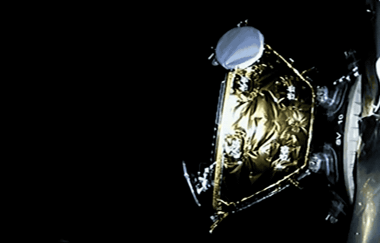

|
I'm Bryce Salmi, an Electrical Engineer in Los Angeles, CA. I've been working in the Aerospace industry for over ten years designing electronics that fly on orbital class launch vehicles and satellites. You can view my LinkedIn profile for more professional information. This website is a collection of select personal and professional projects relevant to my career. Not all projects are here. When possible I will include information regarding professional projects keeping NDA/proprietary information excluded. Relativity SpaceStarting as employee 17 and the first avionics hire at Relativity Space, I was able to have a large impact on the Terran 1 avionics architecture. Since we couldn't 3D print avionics (yet?) I opted to think about avionics in a 3D printed way. Continually, we found ourselves asking "how can we iterate faster, reduce complexity, and reuse designs?" which had a profound impact on the vehicle. I was also able to write an article for IEEE Spectrum about 3D printing rockets and our approach at Relativity Space, giving insight into the company mindset.Terran 1 Aeon Engine AvionicsBoth projects can be seen operating in the embedded tweet during a test of Terran 1 Mission 1 first stage engines.Aeon 1 Engine ControllerOne of my main projects as an individual contributor at Relativity Space was to design and build the Aeon 1 engine controller. This controller is a Remote Input/Output device that provides telemetry from engines as well as solenoid actuation. I designed a microcontroller and digital communications architecture which implements several ADC/DAC ICs providing various analog interfaces and solenoid control. This controller is also used as a stage controller and payload controller capable of pyrotechnic deployment. It combines five traditional avionics boxes into one box with a single easy to manufacture PCBA.
Aeon 1 Thrust Vector ControllerIn mid-2021 I became the Responsible Engineer for the Thrust Vector Controller, a 300V three-phase Field Oriented Control (FOC) traction motor PCBA. This controlled an electric linear actuator which gimbals the engine in order to direct the thrust vectors necessary to control the launch vehicle all the way to orbit. While I had to be extremely familiar with Field Oriented Control, a dedicated firmware engineer was responsible for designing the control algorithms.
FaradayRFFaraday Digital TransceiverMy twin brother and I started a small business called FaradayRF which aimed to bring newer digital radio technology to amateur radio. Our fundamental goal was to provide inspiration to using newer technology, embracing higher frequencies, and computer interfaces using modern toolsets. Our FaradayRF GitHub project hosts all the repositories. Both of us joined startups in 2018 and realized we could not spend the time running the project anymore.
900 MHz RF TransceiverThe open source hardware was developed using the KiCad EDA and all source files are located on the GitHub FardayRF-Hardware repository. The transceiver uses a Texas Instruments CC430 IC and communicated to the computer over a USB serial link. Effort was made to keep the design low-cost and simple. More than 100 transievers were manufactured. PDF Schematics can be downloaded directly from GitHub. A small open source community existed around the project. Features of the designed for manufacturing (DFM) four-layer PCBA include:
Faraday Transceiver SoftwareI headed up the development of our Python software used to get data from the transceivers USB serial port. The source code is available from our Faraday Software repository. Several projects were published as packages on the PyPi servers for easy implementation by users. Unit testing and continuous integration was implemented on the GitHub repositories for higher quality code. The Python code utilized a RESTful API, leveraging a web user interface for two-way communications running on a local Python HTTP server. Various applications could be run independently to tap into the RESTful API and provide functions such as:
A TUN/TAP program was also created to allow FardayRF hardware to act as a TCP/IP transceiver. This opened up many pre-existing tools for TCP/IP use that could be leveraged for use with this project. AMSATThe Radio Amateur Satellite CorporationFox-1 Maximum Power Point TrackerAs a continuation of my Rochester Institute of Technology (RIT) Senior Design Project, I worked nights and weekends for two years following graduation to bring the Maximum Power Point Tracker into flight status for use on the Fox-1 cubesat family. Currently there are four in orbit which have launched on an Atlas V, Falcon 9, Launcher One, and a PSLV. The design files and documentation are hosted on the Fox-1-MPPT GitHub repository. I thoroughly documented the MPPT in the technical document which explains the electrical theory of the design in detail. PDF Schematics can be downloaded directly from GitHub at this link. Fox-1 Satellites On Orbit With MPPTs
Analog Maximum Power Point TrackingThe main goal of the AMSAT Fox-1 MPPT was to create a maximum power point tracker that could survive for more than five years in orbit using commercial parts. To do this, we built a completely stateless MPPT. There is no digital processing used to maximize power, no state to corrupt. The MPPT is an analog computer implemented with op-amps and a DC/DC controller cleanly switching between input voltage regulation and output voltage regulation. This protects the design from radiation Single Event Upsets (SEU) and Single Event Latch-ups (SEL). As shown below, the op-amps in the design are used to implement several key circuits. The first one on the top is a constant current RTD driver (1mA) which drives a PT100 RTD located on the backside of the solar panels. The resulting measured voltage is conditioned with an op-amp using a Y=-mX+b gain value. The resulting output voltage of this op-amp is the expected MPPV of the solar cell at its current temperature. The lower circuit is a dual feedback error amplifier configuration that is fed into the TL1451A DC/DC controller. One Op-Amp is responsible for using the measured and conditioned RTD voltage to sense the input solar cell voltage and determine the error between the two. The second op-amp is a more traditional output voltage regulation design which limits the MPPT's output voltage to a voltage safe for the Fox-1 batteries. These two control loops hand-off cleanly due to their polarity and the sharing resistors which combine the signals. Space Exploration Technologies (SpaceX)Crew DragonDuring my employment at SpaceX, I worked on several circuit boards used on the human rated Crew Dragon spacecraft. Analog / Digital Interface PCBAUsed in an avionics box that controls most Remote Input/Output functions on the vehicle, this PCBA is used for critical functions such as fan/pump speed control, various fluid and gas pressures, and docking actuator interfacing implemented with:
Control Panel Buttons and Lighting PCBAThis PCBA interfaced all buttons in the Crew Dragon control panel used by the astronauts during flight. It did this in a triplicated, fault tolerant manner to reduce erroneous button presses. Additionally, this PCBA also powers all LED's in the vehicle including ambient ring lights, galley lighting, and astronaut task lights. Falcon 9 Launch VehicleI worked on a variety of avionics flown on dozens of launches. Most notably the first booster ever landed (Falcon 9 Flight 21). Several of my designs also flew on the first Falcon Heavy launch including the core stages and side-boosters.Payload ControllerThis avionics box uses a fault tolerant triplicated design to deploy payloads from Stage 2. It is critical to the success of the mission and was my first avionics box I was able to see completely through the SMC-S-016 style ATP/QTP testing campaign. It has deployed at least 75 Iridium NEXT and 17 ORBCOMM OG2 satellites to date.

Falcon 9 Flight Computer PCBAsAs part of the Falcon 9 "Block 5" upgrade (2017) I was tasked with updating the following PCBAs used in the Falcon Flight Computer on both Stage 1 and Stage 2:
|